For my Master’s thesis, I worked on the NLP task of fact-checking. It started out with the observation that current, traditional Transformers (such as BERT) can only handle a limited amount of evidence. That is because they have a quadratic memory complexity in the sequence length. Therefore, processing more evidence becomes quadratically more expensive with every token added.
The idea of my thesis is to analyse the effect of using more efficient Transformer models with sub-quadratic complexity to increase the amount of evidence they can process. Doing so increased prediction accuracy for long documents and reduced computational costs.
In this blog post, I will give an overview of my research. If you want to get a complete picture, have a look at my full thesis.
With this thesis, I have obtained my Master’s degree in computer science at Graz University of Technology. I worked on the project while employed at Buster.Ai, a Paris-based startup with a focus on NLP. I would like to thank the whole team once again for their support and the computational resources I was provided with.
What is fact-checking? Why should I care?
False information on and off the web is becoming increasingly common. Economic fallout, societal conflicts and health risks follow. Automatic fact-checking systems are one way to combat this ever more dangerous problem. In principle, they work like this: A claim that is to be verified is input into the system. It, then, predicts a verdict. This verdict is not (and cannot be) whether the claim is true or false since this would require the model to make definitive statements about the world. As this is infeasible, such systems resort to predicting whether a claim is supported or refuted by their evidence base (a.k.a. knowledge base). For example, for the famous fact-checking data sets FEVER and FEVEROUS, this evidence base is Wikipedia. Here is an example of such a claim from the FEVEROUS data set:
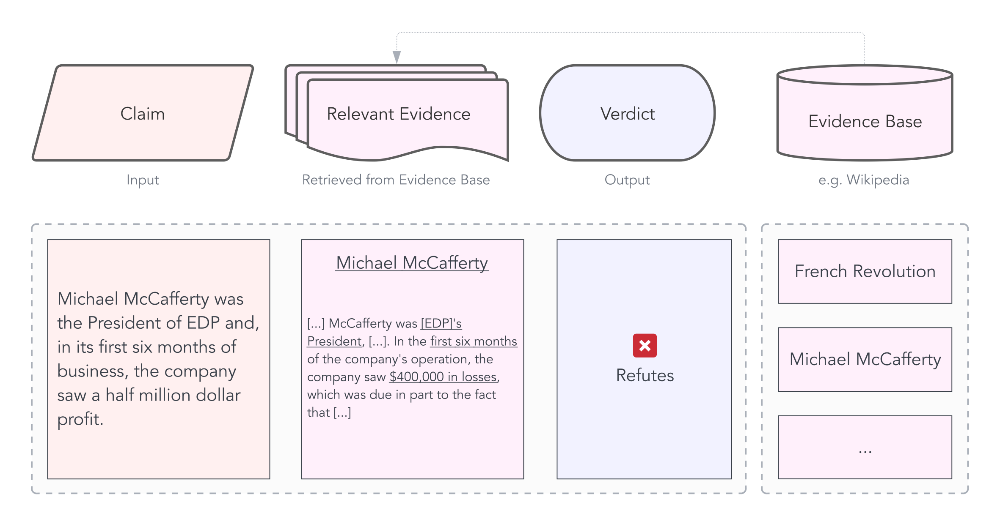
The evidence base (Wikipedia) is used to predict the verdict of the claim (Refuted).
How do fact-checking systems work?
Fact-checking systems with explicit knowledge bases work as follows:
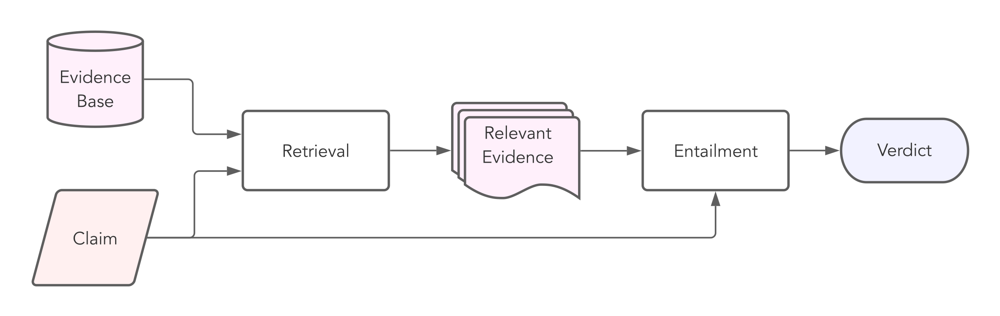
A retrieval component extracts the relevant evidence (also called gold evidence) from the evidence base. In the previous example, this would be the Wikipedia article of Micheal McCafferty. Then, an entailment model predicts a verdict, i.e., whether the retrieved evidence supports or refutes the claim. The entailment task is also known as Natural Language Inference (NLI). Most state-of-the-art entailment models today are Transformers, which process one joint input sequence per sample. In the case of fact-checking, this means that the claim and the relevant evidence are concatenated into one long sequence of length \(N\).
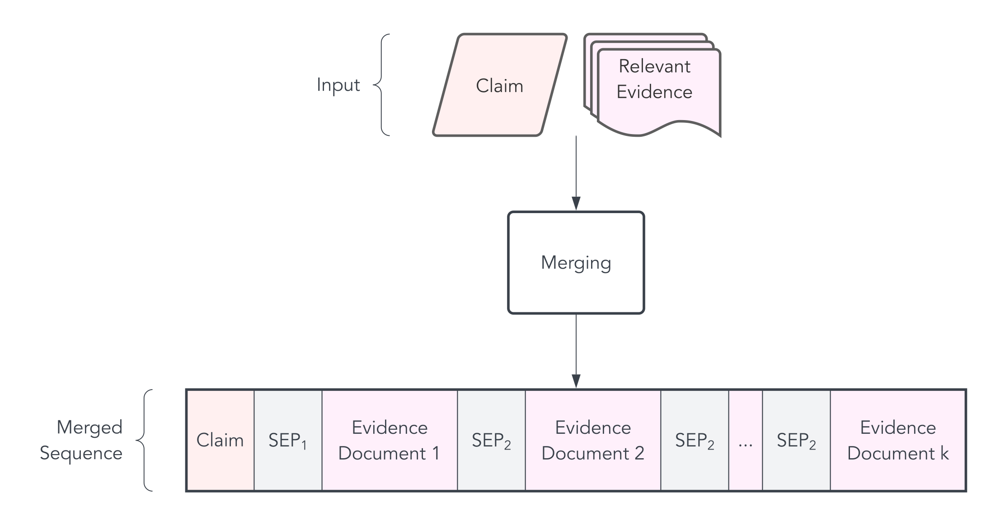
Naturally, the more evidence the model should process, the longer the input sequence becomes. However, as Transformers have quadratic complexity in the input length, adding more evidence becomes quadratically more expensive.
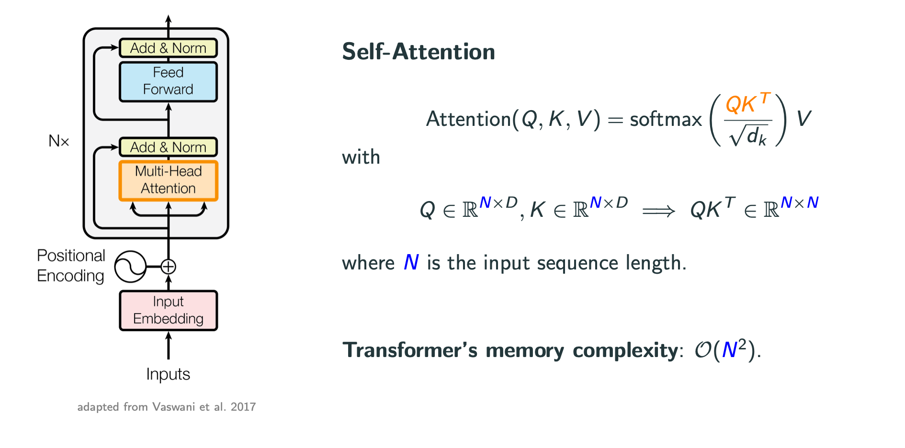
Therefore, the sequence has to be cut off at some point.
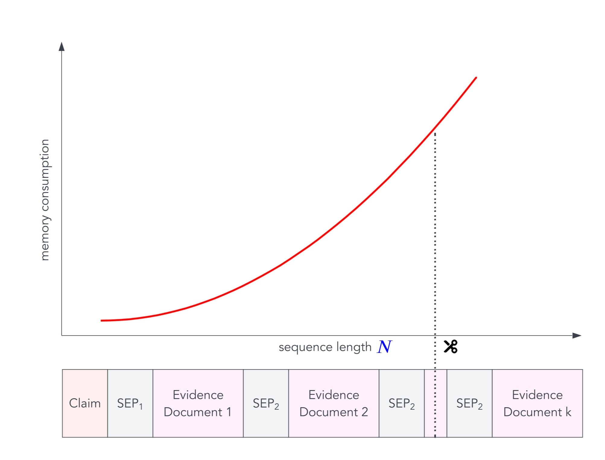
RoBERTa predictions on FEVER
Cutting off irrelevant evidence is obviously no problem, but cutting off gold evidence is. As you can see in this plot, samples for which the evidence has been cut off are significantly less likely to be correctly classified than samples for which the models have seen the gold evidence.
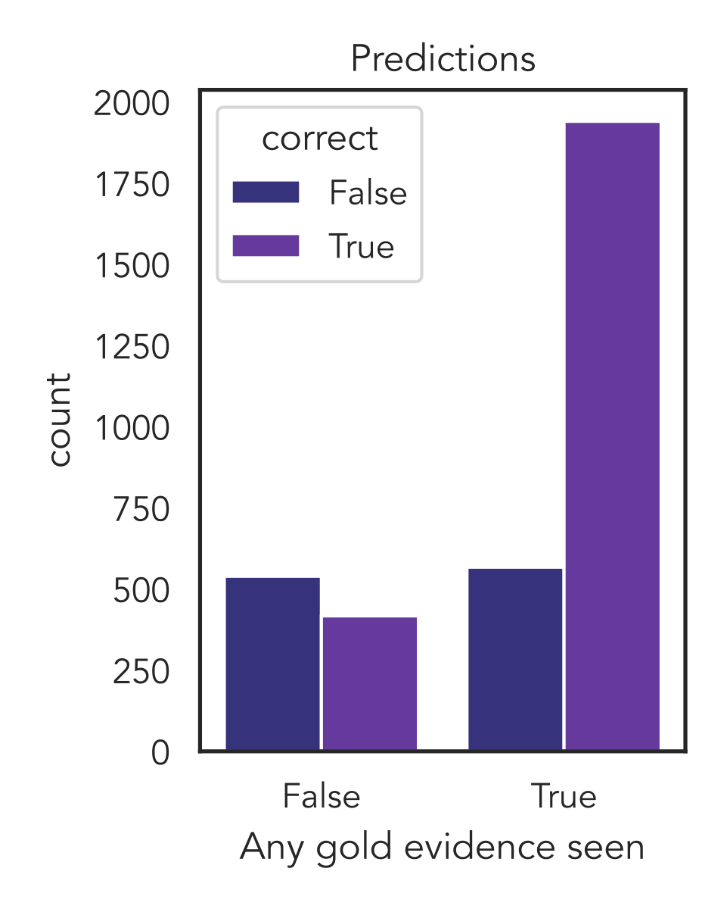
My Work
The idea of my thesis is relatively straight-forward:
Use more efficient Transformers with sub-quadratic complexity that can handle more evidence.
The research questions I was aiming to answer were the following:
- Does it improve prediction performance?
- Does it reduce computational costs?
- Which model works best?
- Is the approach still interpretable?
For doing so, I built a complete fact-checking pipeline with preprocessing, retrieval and entailment components. Let’s go through them.
Retrieval
While retrieval methods weren’t the focus of my work, the results of the retrieval step form the foundation of the pipeline. I, therefore, ran some experiments to find the ones who were best suited for my task.
In general, there are two broad categories of retrieval methods:
- Sparse methods: These are based on classical information retrieval techniques and work with term frequency statistics. Famous examples are TF.IDF and BM25.
- Dense methods: These approaches use dense neural networks (hence the name). A prominent example is Dense Passage Retrieval (DPR). The principle is relatively simple: All documents are projected into an embedding space, and the embeddings are stored in a database. At retrieval time, an embedding of the claim is computed, and the documents closest to it are returned. Common metrics for closeness are the dot-product and cosine similarity.
If you’re interested, the creators of the wonderful library haystack have written a more in-depth comparison.
For my purposes, I decided to focus on sparse retrieval with BM25 since it yielded sufficient results without further fine-tuning. It was a good baseline to compare entailment methods.
However, this is not to say that I believe sparse methods are sufficient for all fact-checking applications. Their inability to handle synonyms is just the most glaring shortcoming of exact term matching. DPR isn’t the ideal solution either. For example, claims that require multi-hop reasoning (as nicely explained by Ostrowski, Wojciech et al.) require specialised methods, such as Multi-Hop Dense Retrieval (MDR). Due to cascading errors, the shortcomings of retrieval methods cannot entirely be mitigated by using more powerful entailment models. If the relevant evidence hasn’t at all been retrieved, the entailment model won’t be able to make up for that.
No Passage Retrieval
Most fact-checking pipelines today use a two-step retrieval process:
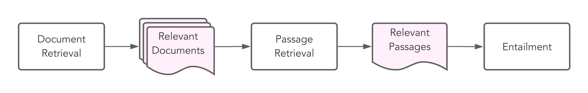
First, the relevant documents are retrieved and then the relevant passages therein. This second, so-called passage retrieval step is necessary to extract relevant passages from the documents and reduce the amount of information the entailment component needs to handle. However, as I’m using entailment models that can handle much larger input sequences, I can skip the passage retrieval component and simplify the retrieval step to this:
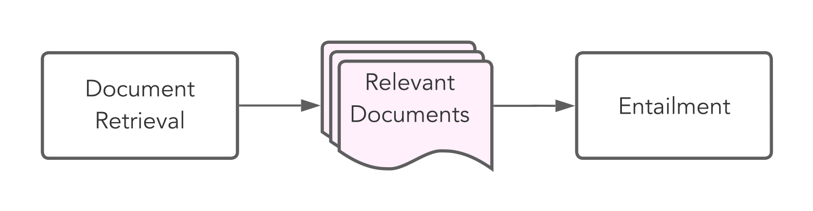
This removes the complexity and computational cost that the passage retrieval incurs. However, it also requires the entailment component to be better able to retrieve the relevant passages in the input sequence.
Entailment
The core part of this work concerns the entailment component. The ones in my experiments can handle more evidence by replacing classical Transformer models with more efficient variants.
As a baseline, I use RoBERTa, which achieves quite good results for NLI at a moderate number of parameters. However, as it is a traditional quadratic Transformer, it can reasonably only handle up to 512 tokens in most current hardware settings.
While there are a lot of Transformers with sub-quadratic complexity out there, I evaluated the following four, which cover a good mix of different techniques:
Longformer: This model replaces the full self-attention component with a pattern approach whereby only local tokens, tokens within a dilated sliding window and global tokens can attend to each other. The Hugging Face Blog has a nice writeup if you’re interested in the details. For my experiments, I activated the global attention for all claim tokens. Thereby, the claim could attend to (and be attended to by) all evidence tokens.
Big Bird: In principle, Big Bird is quite similar to Longformer. There are some important differences, such as random attention and a different global-local attention implementation, which lead to superior results in the original paper on multiple tasks. Hence, I also evaluated this model.
FNet: In a very different fashion, FNet completely does away with the self-attention component and replaces it with a Fourier transform. The authors argue that this sufficiently mixes the tokens so that the feed-forward layers in the subsequent encoder blocks can learn across hidden and sequence dimension.
Perceiver IO: This Deepmind model was built to support not only text but also other modalities such as images and audio. Its core idea is to project a large input into a much smaller latent space, on which attention blocks are applied. Therefore, the model’s complexity is no longer quadratic in the input length but in the latent size.
This was just a very brief overview of the methods. If you want to learn more, there are plenty of resources on the web. I also provide a more detailed description in my thesis.
Extending Position Embeddings
Longformer and Big Bird were specifically designed to handle longer input sequences. It is probably therefore that pre-trained checkpoints for 4096 tokens were available (allenai/longformer-base-4096, google/bigbird-roberta-base).
However, for FNet and Perceiver IO, there are no weights available for configurations that can handle as much evidence as the other two. Since I lacked the computational resources to train them from scratch, I experimented with four ways of extending position embeddings: random initialisation, repetition, linear interpolation and nearest-neighbour interpolation.
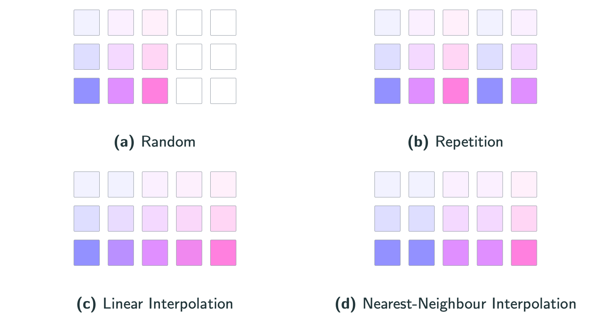
I found repetition to train fastest for FNet and nearest-neighbour interpolation for Perceiver IO. However, these are imperfect solutions, and it would likely have improved results to directly pre-train models for longer inputs with masked language modelling (MLM). From a personal learning perspective, it was still interesting to develop solutions to make this work in a resource-constrained setting.
Evaluation
Finally, we get to the evaluation results. The data sets I used for comparing models and benchmarking overall performance were FEVER, FEVEROUS and FaVIQ. All three have Wikipedia as their evidence bases, but FEVER only contains the introductory paragraphs, while the others contain the full articles.
To better analyse how useful efficient Transformers are, I computed where in the input sequence the gold evidence was located for different data sets. After all, using a longer input sequence doesn’t make sense if the gold evidence is found in the beginning already.
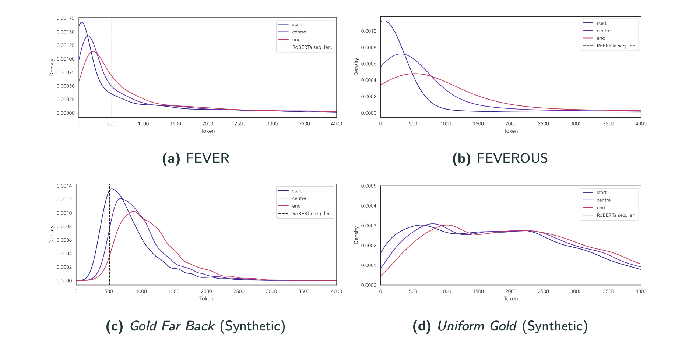
All of these results are based on BM25 retrieval. For FEVER, a lot of gold evidence is before the cutoff line for RoBERTa (512 tokens), while for FEVEROUS, a lot more evidence is after that. To detach the entailment experiments from the retrieval method used, I also generated two synthetic retrieval inputs: In Gold far back, most gold evidence is after what RoBERTa can see, and in Uniform gold, it is uniformly distributed across the 4096 tokens.
Unsurprisingly, in the gold far back setting, models that can look beyond token 512 have a big advantage and perform considerably better than RoBERTa:
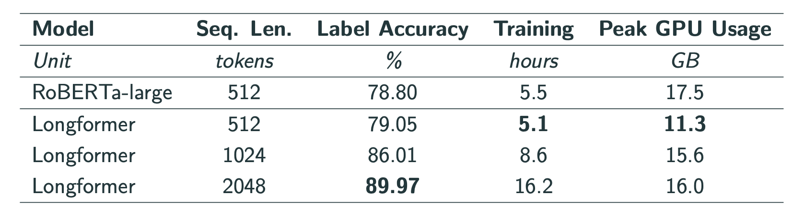
In the uniform gold setting, which I used to compare all models, I found Longformer to perform best:
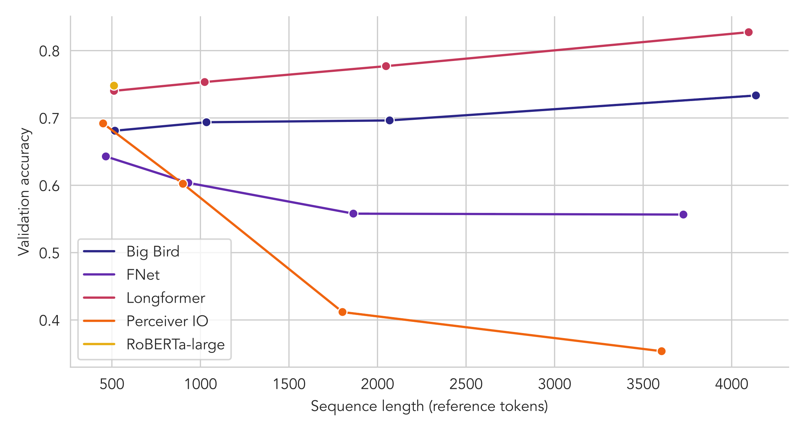
Its performance increases when it sees more evidence and clearly beats the RoBERTa baseline. Big Bird develops similarly but consistently worse than Longformer. While Perceiver IO starts relatively promising, I found it to be hard to fine-tune to longer sequences. I suspect that this is because the encoder is hard to adjust to different position embeddings. FNet is outperformed by all other models, which is, however, not too surprising, given that it is also far behind RoBERTa on the GLUE NLI task.
Finally, I evaluated the best-performing model, Longformer, on FEVER, FaVIQ and FEVEROUS and found that using longer sequences does improve performance:
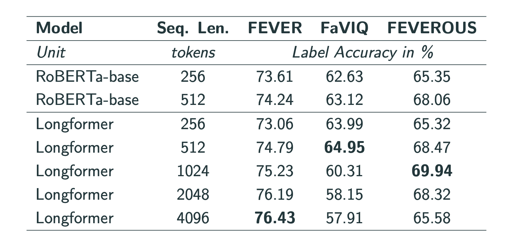
I also note, however, that on FEVEROUS, performance drops with longer sequence lengths, suggesting that the models are susceptible to noise, i.e., irrelevant evidence. My ablation study on this matter confirmed this hypothesis by showing that RoBERTa’s performance dropped from 95% accuracy when seeing only gold evidence to 86% when irrelevant evidence is appended.
Key Findings
Overall, I find that feeding more evidence does improve entailment label accuracy. Hence, the title of this thesis is More is More. As for the answers to the research questions (simplified and condensed):
- Does using more efficient Transformers that can handle more evidence improve prediction performance?
- Yes, for longer input documents.
- Yes, if the evidence is only retrieved relatively far back.
- Only slightly in real-world retrieval results.
- Does it reduce computational costs?
- Only slightly when just swapping out the entailment component, i.e., replacing RoBERTa with Longformer.
- Yes, significantly by completely skipping the passage retrieval step, which typically makes up around 35-45% of the inference time.
- Which model works best?
- Out of the ones I experimented with, Longformer.
- Is the approach still interpretable?
- Not out of the box. Due to the removal of the passage retrieval step, this pipeline cannot exhibit which passages it considered for its decision. It can only provide this information on a document level.
Conclusion
Using efficient Transformers allowed me to reach 97-99% of the state-of-the-art performance on the FEVER data set at only 40-60% of the inference time. This is made possible by efficient BM25 document retrieval, but primarily because using efficient Transformers allows for completely skipping the passage retrieval step.
While these models obtain impressive results on the data sets they were trained on, plenty of challenges still lie ahead of us. To name a few: Models should become better at handling irrelevant evidence; they should know what they don’t know and be able to explain how they came up with their verdicts.
In any case, I enjoyed working on this challenging task and am eager to see how the field develops in the future. I believe that the use of more efficient Transformer models has the potential for unlocking new levels of fact-checking performance with respect to both predictive and computational performance.